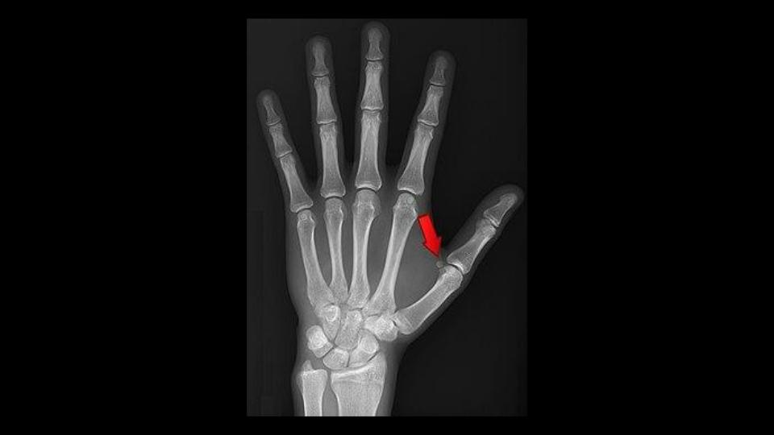

📚 Bases Fisiológicas de la Mano
🦴 Estructura Ósea
La mano humana es una estructura compleja formada por 27 huesos que trabajan coordinadamente para permitir movimientos precisos y fuerza de agarre.
- Carpo (muñeca): 8 huesos cortos dispuestos en dos filas que permiten la flexibilidad de la muñeca
- Metacarpo: 5 huesos largos que forman la palma de la mano
- Falanges: 14 huesos que forman los dedos (3 por dedo, excepto el pulgar que tiene 2)
🔄 Articulaciones y Movimiento
Las articulaciones de la mano permiten una amplia gama de movimientos:
- Articulaciones metacarpofalángicas (MCF): Uniones entre los metacarpianos y las falanges proximales. Permiten flexión, extensión, abducción y aducción.
- Articulaciones interfalángicas (IF): Entre las falanges. Solo permiten flexión y extensión.
- Articulación carpometacarpiana del pulgar: Tipo silla de montar, permite la oposición del pulgar (movimiento único que nos permite tocar la punta del pulgar con los otros dedos).
💪 Músculos y Tendones
Aunque en la radiografía no se ven los músculos, es importante saber que:
- Músculos intrínsecos: Están dentro de la mano y controlan movimientos finos
- Músculos extrínsecos: Están en el antebrazo y sus tendones se insertan en los huesos de la mano
- Tendones: Conectan los músculos a los huesos, transmitiendo la fuerza para el movimiento
🔬 Fisiología del Movimiento
El movimiento de la mano requiere:
- Coordinación neuromuscular: El sistema nervioso envía señales a los músculos específicos
- Propiocepción: Receptores en articulaciones y músculos informan al cerebro sobre la posición
- Estabilidad articular: Ligamentos y cápsulas articulares mantienen los huesos en su lugar mientras permiten el movimiento
🔍 Explora la Radiografía
Haz clic en los puntos numerados o selecciona una etiqueta de abajo para identificar las estructuras

💡 Nota: La flecha roja en la imagen señala la articulación metacarpofalángica del pulgar
🎯 Ejercicio: Identifica las Estructuras
Instrucciones:
- Selecciona un número de la lista de abajo
- Luego haz clic en el punto correspondiente de la radiografía (o viceversa)
- Cuando termines, pulsa "Verificar Respuestas"
1
Falanges
Huesos de los dedos
2
Metacarpianos
Huesos de la palma
3
Huesos del Carpo
Muñeca
4
Radio
Hueso del antebrazo (lado pulgar)
5
Articulación MCF
Metacarpofalángica (señalada con flecha)
🔍 La Flecha Roja: Articulación Metacarpofalángica
📌 ¿Qué señala la flecha?
La flecha roja en la imagen señala la articulación metacarpofalángica (MCF) del primer dedo (pulgar).
⚙️ Importancia Fisiológica
- Tipo de articulación: Condílea, permite movimientos en dos planos
- Movimientos posibles: Flexión, extensión, abducción, aducción y circunducción
- Importancia funcional: Esencial para la prensión y el agarre de objetos
- Estabilidad: Mantenida por ligamentos colaterales y la cápsula articular
🏥 Relevancia Clínica
Esta articulación es comúnmente afectada en:
- Artritis reumatoide: Inflamación que puede causar deformidad
- Fracturas: Por caídas o golpes directos
- Esguinces: Por movimientos forzados
- Artrosis: Desgaste del cartílago con la edad